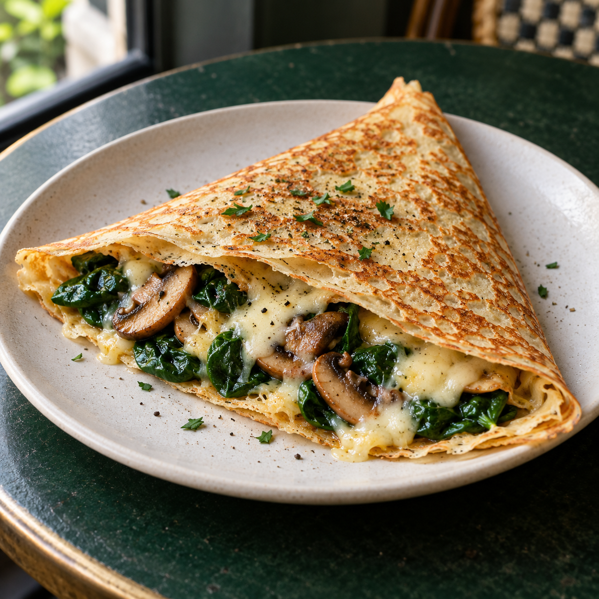
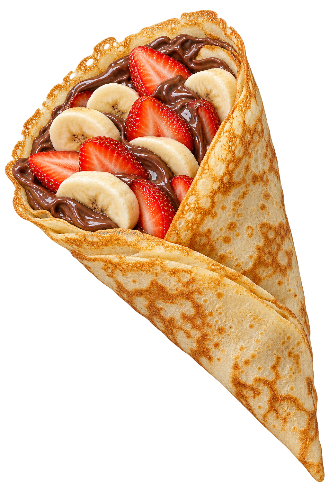

Make it savory.
Little Paris. Chelsea. City Hall.

Warm crêpes. Winter strolls.
Your little stop at Bryant Park.
October 28 – January 2
Bryant Park Winter Village, NYC
A crêpe in hand and the city around you. From Nutella and strawberries to savory neighborhood favorites, there’s a little something for every winter wander.
Find your favorite
Little Paris. Chelsea. City Hall.

Hot chocolate with a little extra.
Look for the blue-and-gold Crêpe Café kiosk. Follow the smell of warm crêpes.
Bryant Park Winter VillageOctober 28 – January 2
Daily café hours will be posted here soon.
Our seasonal welcome marks the season, not whether the kiosk is open right now.